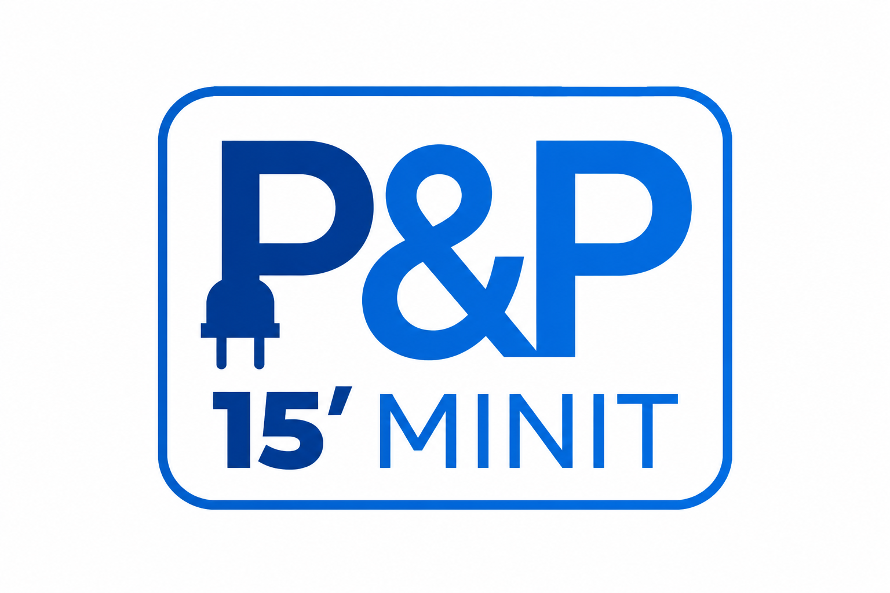
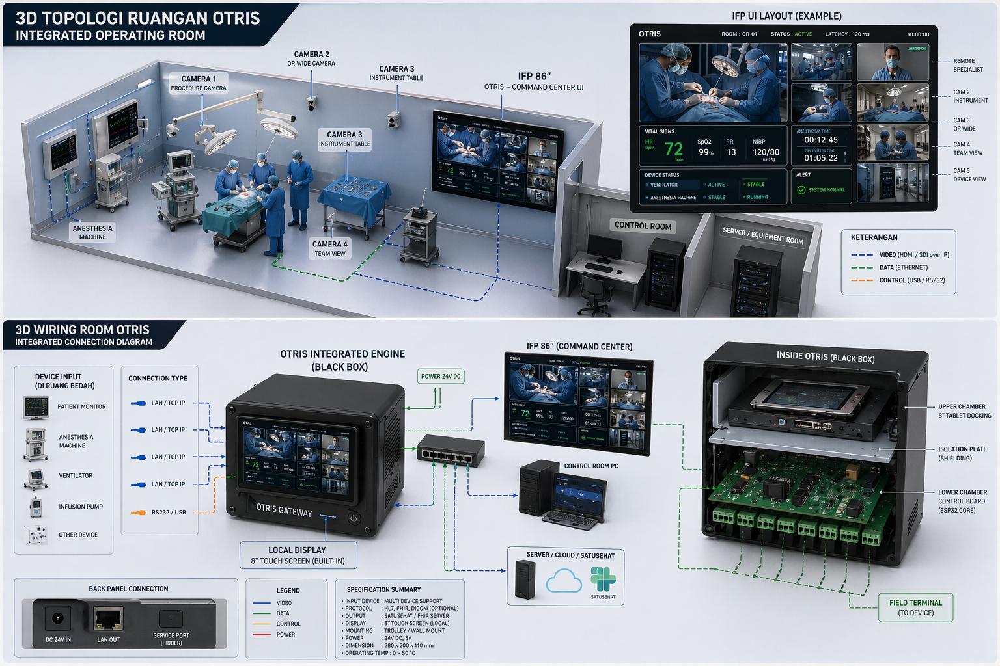
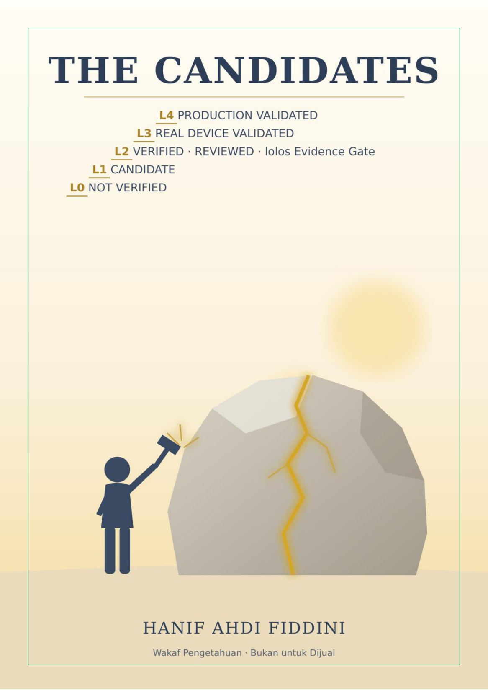

MASTER BRAND — OTRIS
Platform integrasi yang menyatukan perangkat medis, data, antarmuka klinis, dan konektivitas jarak jauh dalam arsitektur yang terkelola.
Pelajari OTRIS →OTRIS • MEDICAL SOVEREIGNTY • 2026
Kami membangun jembatan teknologi kesehatan agar perangkat yang sudah ada, data, dan tenaga ahli dapat terhubung lebih dekat kepada pasien — tanpa menunggu semuanya diganti atau sempurna terlebih dahulu.
MURAH, BUKAN MURAHAN. • KAMI SEDANG MEMBANGUN JEMBATAN UNTUK NYAWA.

PINTU DARI OTRIS.ID →
Satu pintu. Di dalamnya ada dua: Wakaf Rumah + Pemecah Batu. Pemecah Batu ada di dalam RUMAH-INSTALL.
“Rumah ini diwakafkan. Ilmu tidak dijual, yang dijual tenaga dan jasa. Penghasilan dari jasa untuk anak-anak.”
FILOSOFI NILAI
OTRIS menekan biaya dengan mengintegrasikan teknologi yang sudah dimiliki fasilitas kesehatan. Nilai tidak dikurangi; pemborosan yang dikurangi. Integration Over Replacement adalah cara kami menjaga investasi rumah sakit tetap berguna.
Platform integrasi yang menyatukan perangkat medis, data, antarmuka klinis, dan konektivitas jarak jauh dalam arsitektur yang terkelola.
Pelajari OTRIS →Identitas Plug & Play OTRIS: instalasi dibuat sesederhana mungkin bagi pengguna lapangan. Prinsip 15 menit adalah target UX pada kondisi dan perangkat yang telah memenuhi prasyarat dan tervalidasi.
Lihat Plug & Play →ARSITEKTUR YANG MENJAGA JEMBATAN
Perangkat medis tetap melakukan tugasnya. Gateway mengenali dunia vendor, menormalkan data ke Canonical OTRIS, lalu Core dan Clinical Wall bekerja dengan bahasa yang konsisten. Local berdiri sendiri; cloud memperluas, bukan menggantikan.
Gambar: Lihat diagram hardware → • File gambar ada di folder assets/, bukan background, jadi bisa diklik dan dibuka.
THE OTRIS CONSTITUTION
INTEGRATION OVER REPLACEMENT • VENDOR AGNOSTIC • CANONICAL FIRST • GATEWAY FIRST • EVENT DRIVEN • LOCAL FIRST • AUDIT FIRST
Constitution menjaga identitas OTRIS ketika teknologi berubah. Arsitektur tidak boleh menjadi tawanan satu vendor. Gateway menerjemahkan, Core memproses. Data Path dan Execution Path dipisahkan. Fungsi lokal tidak boleh mati hanya karena cloud tidak tersedia.
BACA THE OTRIS CONSTITUTION →“Jagalah jembatan ini.”
QC RECORD • REFERENCE • VERIFICATION
Constitution menetapkan prinsip. Engineering membangun mekanisme. QC meminta pembuktian. Governance menentukan authority. Edge menjalankannya. Continuous Integrity memeriksa apakah alasan untuk mempercayainya masih berlaku.
Reference, Verification & Continuous Integrity. Kepercayaan adalah sesuatu yang harus dapat diperiksa, diuji, dikoreksi, dan diperoleh kembali — bukan sekadar dinyatakan.
BUKA QC RECORD →ABOUT OTRIS • OTRIS HUMANIS
Kami tidak memulai dari keinginan membuat perangkat baru. Kami memulai dari sebuah pertanyaan: mengapa jarak, keterbatasan infrastruktur, dan perbedaan teknologi harus menentukan siapa yang dapat memperoleh akses terhadap keahlian medis?
OTRIS — Operating Theatre Real-Time Integration Systems — dibangun sebagai jembatan. Antara perangkat yang sudah dimiliki rumah sakit dengan sistem digital. Antara data dengan manusia yang membutuhkannya. Antara rumah sakit dengan tenaga ahli.
Murah, bukan murahan. Keterjangkauan tidak boleh diperoleh dengan mengurangi prinsip, menghilangkan pembuktian, atau menurunkan tanggung jawab.
Teknologi yang dimulai dari manusia. ICU, operating theatre, patient monitor, Edge Agent, protokol, data, dashboard — semuanya alat. Manusia adalah tujuannya.
Kami mempertahankan UNKNOWN ketika evidence belum cukup. Kami tidak ingin sistem mengatakan sesuatu hanya karena sebuah kode memungkinkan sistem mengatakannya. Pertanyaan kami: “Tunjukkan kepada saya mengapa sistem berhak mengatakan itu.”
Hanif Ahdi Fiddini
Founder — OTRIS & P&P
HEALTHCARE • MEDICAL PLANE
OTRIS bertindak sebagai penerjemah dari format data kanonikal ke FHIR, sehingga data ruang operasi real-time dapat menjadi bagian dari rekam medis elektronik nasional.
KEPATUHAN: Wajib PMK 24/2022. OTRIS mengirim data vital, gambar kamera, laporan tindakan, dan jejak audit langsung ke SATUSEHAT.
KECEPATAN & KEAMANAN: MQTT untuk real-time dan HTTPS untuk SATUSEHAT API. Latency Device → Bus < 12ms p95
OTRIS menerjemahkan dan menstandarkan data, sementara makna klinis dan keputusan tetap berada dalam tata kelola klinis yang berwenang.
OTRIS EDGE AI
Kecerdasan di Edge. Bukti Sebelum Asumsi.
OTRIS Edge AI membawa kecerdasan integrasi lebih dekat ke perangkat medis — ke tempat data berasal, diamati, divalidasi, dan diterjemahkan menjadi informasi klinis yang dapat digunakan oleh ekosistem OTRIS.
PERANGKAT ADALAH SUMBER. GATEWAY ADALAH JEMBATAN. BUKTI MENENTUKAN APA YANG DAPAT DIPERCAYA OTRIS.
Ketika OTRIS bertemu perangkat yang belum dikenal, sistem tidak langsung memberikan arti klinis. Statusnya: UNKNOWN — BELUM DIKETAHUI
PERANGKAT BARU → TEMUKAN → AMATI → REKAM → IDENTIFIKASI KANDIDAT → KUMPULKAN BUKTI → VALIDASI → INTEGRASIKAN
WIJOYO KUSUMO — AMANAH
WIJOYO KUSUMO adalah nama dan amanah di balik Pemecah Batu. Nama ini tidak boleh dihapus, tidak boleh diganti.
Dari RAW BYTES jadi profile.yaml yang bisa di-share. Pekerjaan besar dipecah sampai bisa diperiksa.
Lihat Pemecah Batu →Untuk TK Cia & kuliah Lacita. Ilmu tidak dijual, yang dijual tenaga dan jasa.
Lihat Wakaf →NANO INGRESS → CAPTURE → CLASSIFICATION → FINGERPRINT → EVIDENCE → REPLAY → CANDIDATE → GOVERNANCE
Prinsip: STOP — REPORT — DO NOT AUTO-REPAIR — DO NOT FABRICATE.
OTRIS PLUG & PLAY
Manfaatkan perangkat medis yang sudah ada. Tanpa perlu mengganti sistem, tanpa vendor lock-in. Colok, konfigurasi, dan mulai terintegrasi.
Tombol di atas ini adalah <a> beneran, bukan gambar. Bisa dipencet, bisa di-klik kanan, bisa dibuka di tab baru.
SATU GATEWAY
UNTUK SEMUA PERANGKAT OR
Gambar Edge Agent di versi lama sekarang jadi:

PLUG & PLAY
Plug & Play bukan berarti menyederhanakan tanggung jawab. Semakin sederhana pengalaman pengguna, semakin besar pekerjaan yang harus diselesaikan oleh sistem.
Bila proses pemasangan masih terlalu rumit, kami kembali kepada desain.
HL7 • FHIR
OTRIS mengumpulkan data, membersihkan, menstandarkan, dan mengantarkannya dalam bentuk FHIR ke SATUSEHAT. Data Path dan Execution Path dipisahkan.
Lihat integrasi SATUSEHAT →WAKAF PRODUKTIF • ISLAMIC COMPLIANCE
Sistem dan perangkat GRATIS (Semua Fitur Full Access) — Cukup Biaya Pemeliharaan & Transparansi Jaringan Rp 300.000 / Tahun.
Sistem Terbatas • Berbasis Pengajuan & Seleksi Kelayakan
Form pengajuan di versi ini hanya contoh UI. Data tidak dikirim atau disimpan dan tidak menjamin persetujuan.
LIHAT WAKAF RUMAH + TRUST HOUSE →WIJOYO TRUST HOUSE — DARI OTRIS • TUJUAN PINTU
The Home of Ideas. The Power of AI. The Freedom to Create.
Ini dari OTRIS. Website wakaf ini — orang bisa langsung download dan pakai. Pemecah Batu dan Wakaf Rumah sekarang jadi satu di rumah ini.
WAKAF RUMAH — DARI OTRIS
“Rumah ini diwakafkan. Ilmu tidak dijual, yang dijual tenaga dan jasa. Penghasilan dari jasa untuk anak-anak.”
Siapapun boleh terima dan pakai wakaf ini.
PESAN AMBO UNTUK ANAK-ANAK
1. Ilmu tidak dijual. Ilmu itu wakaf, buat semua bisa belajar.
2. Hardware projek boleh dijual kalau dapat. Itu hasil tenaga dan tangan kalian.
3. System tidak boleh dijual. System itu wakaf, punya bersama.
Atas Nama: Hadi Wijoyo Kusumo
Pengelola: Hanif Ahdi Fiddini
PEMECAH BATU — DI DALAM RUMAH INI

ENGLISH BOOK COVER

Pemecah Batu ada di dalam RUMAH-INSTALL. Satu download, dapat Rumah + Pemecah Batu sekaligus.
STOP — REPORT — DO NOT AUTO-REPAIR — DO NOT FABRICATE.
Pekerjaan besar dipecah sampai bisa diperiksa. Dari RAW BYTES jadi profile.yaml yang bisa di-share. Kalau tidak ada bukti, statusnya UNKNOWN — dan UNKNOWN jangan ditebak.
go vet — PASS
go test — PASS
go build — 7.4 MB Mac
./pemecah-batu nano-pipeline --help
Cara Terima — Satu Download Dapat Dua:
1. Download RUMAH-INSTALL.zip
2. Unzip — dapat folder RUMAH-INSTALL, ada Rumah + Pemecah Batu
3. Masuk folder, jalanin sh INSTALL.sh
4. Rumah jalan di http://127.0.0.1:8080. Pemecah Batu ada di dalamnya.
WIJOYO KUSUMO — AMANAH — OTRIS — otris.id • WIJOYO TRUST HOUSE — Dari OTRIS
OTRIS — otris.id • WIJOYO TRUST HOUSE — Dari OTRIS
www.otris.id → • GitHub — Website-otris.id →
MIT LICENSE • UNKNOWN JANGAN DITEBAK • LOCAL FIRST • AI POWERED • HUMAN OWNED